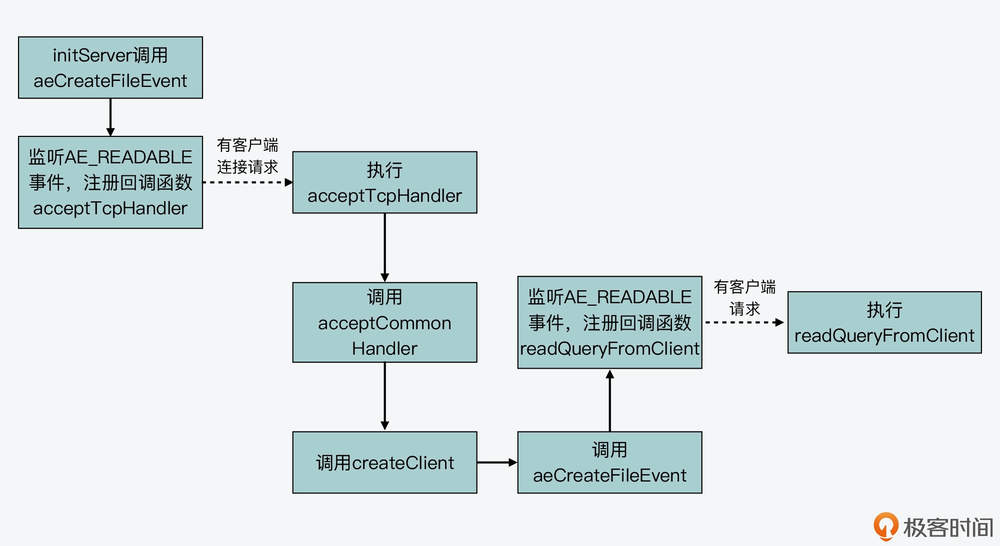

- 00 开篇词 阅读Redis源码能给你带来什么？.md
- 01 带你快速攻略Redis源码的整体架构.md
- 02 键值对中字符串的实现，用char还是结构体？.md
- 03 如何实现一个性能优异的Hash表？.md
- 04 内存友好的数据结构该如何细化设计？.md
- 05 有序集合为何能同时支持点查询和范围查询？.md
- 06 从ziplist到quicklist，再到listpack的启发.md
- 07 为什么Stream使用了Radix Tree？.md
- 08 Redis server启动后会做哪些操作？.md
- 09 Redis事件驱动框架（上）：何时使用select、poll、epoll？.md
- 10 Redis事件驱动框架（中）：Redis实现了Reactor模型吗？.md
- 11 Redis事件驱动框架（下）：Redis有哪些事件？.md
- 12 Redis真的是单线程吗？.md
- 13 Redis 6.0多IO线程的效率提高了吗？.md
- 14 从代码实现看分布式锁的原子性保证.md
- 15 为什么LRU算法原理和代码实现不一样？.md
- 16 LFU算法和其他算法相比有优势吗？.md
- 17 Lazy Free会影响缓存替换吗？.md
- 18 如何生成和解读RDB文件？.md
- 19 AOF重写（上）：触发时机与重写的影响.md
- 20 AOF重写（下）：重写时的新写操作记录在哪里？.md
- 21 主从复制：基于状态机的设计与实现.md
- 22 哨兵也和Redis实例一样初始化吗？.md
- 23 从哨兵Leader选举学习Raft协议实现（上）.md
- 24 从哨兵Leader选举学习Raft协议实现（下）.md
- 25 PubSub在主从故障切换时是如何发挥作用的？.md
- 26 从Ping-Pong消息学习Gossip协议的实现.md
- 27 从MOVED、ASK看集群节点如何处理命令？.md
- 28 Redis Cluster数据迁移会阻塞吗？.md
- 29 如何正确实现循环缓冲区？.md
- 30 如何在系统中实现延迟监控？.md
- 31 从Module的实现学习动态扩展功能.md
- 32 如何在一个系统中实现单元测试？.md
- 结束语 Redis源码阅读，让我们从新开始.md
11 Redis事件驱动框架（下）：Redis有哪些事件？
在【第 9 讲】中，我给你介绍了 Linux 提供的三种 IO 多路复用机制，分别是 select、poll 和 epoll，这是 Redis 实现事件驱动框架的操作系统层支撑技术。
紧接着在上节课，我带你学习了 Redis 事件驱动框架的基本工作机制，其中介绍了事件驱动框架基于的 Reactor 模型，并以 IO 事件中的客户端连接事件为例，给你介绍了框架运行的基本流程：从 server 初始化时调用 aeCreateFileEvent 函数注册监听事件，到 server 初始化完成后调用 aeMain 函数，而 aeMain 函数循环执行 aeProceeEvent 函数，来捕获和处理客户端请求触发的事件。
但是在上节课当中，我们主要关注的是框架基本流程，所以到这里，你或许仍然存有一些疑问，比如说：
- Redis 事件驱动框架监听的 IO 事件，除了上节课介绍的客户端连接以外，还有没有其他事件？而除了 IO 事件以外，框架还会监听其他事件么？
- 这些事件的创建和处理又分别对应了 Redis 源码中的哪些具体操作？
今天这节课，我就来给你介绍下 Redis 事件驱动框架中的两大类事件类型：IO 事件和时间事件，以及它们相应的处理机制。
事实上，了解和学习这部分内容，一方面可以帮助我们更加全面地掌握，Redis 事件驱动框架是如何以事件形式，处理 server 运行过程中面临的请求操作和多种任务的。比如，正常的客户端读写请求是以什么事件、由哪个函数进行处理，以及后台快照任务又是如何及时启动的。
因为事件驱动框架是 Redis server 运行后的核心循环流程，了解它何时用什么函数处理哪种事件，对我们排查 server 运行过程中遇到的问题，是很有帮助的。
另一方面，我们还可以学习到如何在一个框架中，同时处理 IO 事件和时间事件。我们平时开发服务器端程序，经常需要处理周期性任务，而 Redis 关于两类事件的处理实现，就给了我们一个不错的参考。
好，为了对这两类事件有个相对全面的了解，接下来，我们先从事件驱动框架循环流程的数据结构及其初始化开始学起，因为这里面就包含了针对这两类事件的数据结构定义和初始化操作。
aeEventLoop 结构体与初始化
首先，我们来看下 Redis 事件驱动框架循环流程对应的数据结构 aeEventLoop。这个结构体是在事件驱动框架代码ae.h中定义的，记录了框架循环运行过程中的信息，其中，就包含了记录两类事件的变量，分别是：
- *aeFileEvent 类型的指针 events，表示 IO 事件。之所以类型名称为 aeFileEvent，是因为所有的 IO 事件都会用文件描述符进行标识；
- *aeTimeEvent 类型的指针 timeEventHead，表示时间事件，即按一定时间周期触发的事件。
此外，aeEventLoop 结构体中还有一个 *aeFiredEvent 类型的指针 fired，这个并不是一类专门的事件类型，它只是用来记录已触发事件对应的文件描述符信息。
下面的代码显示了 Redis 中事件循环的结构体定义，你可以看下。
typedef struct aeEventLoop {
…
aeFileEvent *events; //IO事件数组
aeFiredEvent *fired; //已触发事件数组
aeTimeEvent *timeEventHead; //记录时间事件的链表头
…
void *apidata; //和API调用接口相关的数据
aeBeforeSleepProc *beforesleep; //进入事件循环流程前执行的函数
aeBeforeSleepProc *aftersleep; //退出事件循环流程后执行的函数
} aeEventLoop;
了解了 aeEventLoop 结构体后，我们再来看下，这个结构体是如何初始化的，这其中就包括了 IO 事件数组和时间事件链表的初始化。
aeCreateEventLoop 函数的初始化操作
因为 Redis server 在完成初始化后，就要开始运行事件驱动框架的循环流程，所以，aeEventLoop 结构体在server.c的 initServer 函数中，就通过调用 aeCreateEventLoop 函数进行初始化了。这个函数的参数只有一个，是 setsize。
下面的代码展示了 initServer 函数中对 aeCreateEventLoop 函数的调用。
initServer() {
…
//调用aeCreateEventLoop函数创建aeEventLoop结构体，并赋值给server结构的el变量
server.el = aeCreateEventLoop(server.maxclients+CONFIG_FDSET_INCR);
…
}
从这里我们可以看到参数 setsize 的大小，其实是由 server 结构的 maxclients 变量和宏定义 CONFIG_FDSET_INCR 共同决定的。其中，maxclients 变量的值大小，可以在 Redis 的配置文件 redis.conf 中进行定义，默认值是 1000。而宏定义 CONFIG_FDSET_INCR 的大小，等于宏定义 CONFIG_MIN_RESERVED_FDS 的值再加上 96，如下所示，这里的两个宏定义都是在server.h文件中定义的。
#define CONFIG_MIN_RESERVED_FDS 32
#define CONFIG_FDSET_INCR (CONFIG_MIN_RESERVED_FDS+96)
好了，到这里，你可能有疑问了：aeCreateEventLoop 函数的参数 setsize，设置为最大客户端数量加上一个宏定义值，可是这个参数有什么用呢？这就和 aeCreateEventLoop 函数具体执行的初始化操作有关了。
接下来，我们就来看下 aeCreateEventLoop 函数执行的操作，大致可以分成以下三个步骤。
第一步，aeCreateEventLoop 函数会创建一个 aeEventLoop 结构体类型的变量 eventLoop。然后，该函数会给 eventLoop 的成员变量分配内存空间，比如，按照传入的参数 setsize，给 IO 事件数组和已触发事件数组分配相应的内存空间。此外，该函数还会给 eventLoop 的成员变量赋初始值。
第二步，aeCreateEventLoop 函数会调用 aeApiCreate 函数。aeApiCreate 函数封装了操作系统提供的 IO 多路复用函数，假设 Redis 运行在 Linux 操作系统上，并且 IO 多路复用机制是 epoll，那么此时，aeApiCreate 函数就会调用 epoll_create 创建 epoll 实例，同时会创建 epoll_event 结构的数组，数组大小等于参数 setsize。
这里你需要注意，aeApiCreate 函数是把创建的 epoll 实例描述符和 epoll_event 数组，保存在了 aeApiState 结构体类型的变量 state，如下所示：
typedef struct aeApiState { //aeApiState结构体定义
int epfd; //epoll实例的描述符
struct epoll_event *events; //epoll_event结构体数组，记录监听事件
} aeApiState;
static int aeApiCreate(aeEventLoop *eventLoop) {
aeApiState *state = zmalloc(sizeof(aeApiState));
...
//将epoll_event数组保存在aeApiState结构体变量state中
state->events = zmalloc(sizeof(struct epoll_event)*eventLoop->setsize);
...
//将epoll实例描述符保存在aeApiState结构体变量state中
state->epfd = epoll_create(1024);
紧接着，aeApiCreate 函数把 state 变量赋值给 eventLoop 中的 apidata。这样一来，eventLoop 结构体中就有了 epoll 实例和 epoll_event 数组的信息，这样就可以用来基于 epoll 创建和处理事件了。我一会儿还会给你具体介绍。
eventLoop->apidata = state;
第三步，aeCreateEventLoop 函数会把所有网络 IO 事件对应文件描述符的掩码，初始化为 AE_NONE，表示暂时不对任何事件进行监听。
我把 aeCreateEventLoop 函数的主要部分代码放在这里，你可以看下。
aeEventLoop *aeCreateEventLoop(int setsize) {
aeEventLoop *eventLoop;
int i;
//给eventLoop变量分配内存空间
if ((eventLoop = zmalloc(sizeof(*eventLoop))) == NULL) goto err;
//给IO事件、已触发事件分配内存空间
eventLoop->events = zmalloc(sizeof(aeFileEvent)*setsize);
eventLoop->fired = zmalloc(sizeof(aeFiredEvent)*setsize);
…
eventLoop->setsize = setsize;
eventLoop->lastTime = time(NULL);
//设置时间事件的链表头为NULL
eventLoop->timeEventHead = NULL;
…
//调用aeApiCreate函数，去实际调用操作系统提供的IO多路复用函数
if (aeApiCreate(eventLoop) == -1) goto err;
//将所有网络IO事件对应文件描述符的掩码设置为AE_NONE
for (i = 0; i < setsize; i++)
eventLoop->events[i].mask = AE_NONE;
return eventLoop;
//初始化失败后的处理逻辑，
err:
…
}
好，那么从 aeCreateEventLoop 函数的执行流程中，我们其实可以看到以下两个关键点：
- 事件驱动框架监听的 IO 事件数组大小就等于参数 setsize，这样决定了和 Redis server 连接的客户端数量。所以，当你遇到客户端连接 Redis 时报错“max number of clients reached”，你就可以去 redis.conf 文件修改 maxclients 配置项，以扩充框架能监听的客户端数量。
- 当使用 Linux 系统的 epoll 机制时，框架循环流程初始化操作，会通过 aeApiCreate 函数创建 epoll_event 结构数组，并调用 epoll_create 函数创建 epoll 实例，这都是使用 epoll 机制的准备工作要求，你也可以再回顾下第 9 讲中对 epoll 使用的介绍。
到这里，框架就可以创建和处理具体的 IO 事件和时间事件了。所以接下来，我们就先来了解下 IO 事件及其处理机制。
IO 事件处理
事实上，Redis 的 IO 事件主要包括三类，分别是可读事件、可写事件和屏障事件。
其中，可读事件和可写事件其实比较好理解，也就是对应于 Redis 实例，我们可以从客户端读取数据或是向客户端写入数据。而屏障事件的主要作用是用来反转事件的处理顺序。比如在默认情况下，Redis 会先给客户端返回结果，但是如果面临需要把数据尽快写入磁盘的情况，Redis 就会用到屏障事件，把写数据和回复客户端的顺序做下调整，先把数据落盘，再给客户端回复。
我在上节课给你介绍过，在 Redis 源码中，IO 事件的数据结构是 aeFileEvent 结构体，IO 事件的创建是通过 aeCreateFileEvent 函数来完成的。下面的代码展示了 aeFileEvent 结构体的定义，你可以再回顾下：
typedef struct aeFileEvent {
int mask; //掩码标记，包括可读事件、可写事件和屏障事件
aeFileProc *rfileProc; //处理可读事件的回调函数
aeFileProc *wfileProc; //处理可写事件的回调函数
void *clientData; //私有数据
} aeFileEvent;
而对于 aeCreateFileEvent 函数来说，在上节课我们已经了解了它是通过 aeApiAddEvent 函数来完成事件注册的。那么接下来，我们再从代码级别看下它是如何执行的，这可以帮助我们更加透彻地理解，事件驱动框架对 IO 事件监听是如何基于 epoll 机制对应封装的。
IO 事件创建
首先，我们来看 aeCreateFileEvent 函数的原型定义，如下所示：
int aeCreateFileEvent(aeEventLoop *eventLoop, int fd, int mask, aeFileProc *proc, void *clientData)
这个函数的参数有 5 个，分别是循环流程结构体 eventLoop、IO 事件对应的文件描述符 fd、事件类型掩码 mask、事件处理回调函数proc，以及事件私有数据*clientData。
因为循环流程结构体*eventLoop中有 IO 事件数组，这个数组的元素是 aeFileEvent 类型，所以，每个数组元素都对应记录了一个文件描述符（比如一个套接字）相关联的监听事件类型和回调函数。
aeCreateFileEvent 函数会先根据传入的文件描述符 fd，在 eventLoop 的 IO 事件数组中，获取该描述符关联的 IO 事件指针变量*fe，如下所示：
aeFileEvent *fe = &eventLoop->events[fd];
紧接着，aeCreateFileEvent 函数会调用 aeApiAddEvent 函数，添加要监听的事件：
if (aeApiAddEvent(eventLoop, fd, mask) == -1)
return AE_ERR;
aeApiAddEvent 函数实际上会调用操作系统提供的 IO 多路复用函数，来完成事件的添加。我们还是假设 Redis 实例运行在使用 epoll 机制的 Linux 上，那么 aeApiAddEvent 函数就会调用 epoll_ctl 函数，添加要监听的事件。我在第 9 讲中其实已经给你介绍过 epoll_ctl 函数，这个函数会接收 4 个参数，分别是：
- epoll 实例；
- 要执行的操作类型（是添加还是修改）；
- 要监听的文件描述符；
- epoll_event 类型变量。
那么，这个调用过程是如何准备 epoll_ctl 函数需要的参数，从而完成执行的呢？
首先，epoll 实例是我刚才给你介绍的 aeCreateEventLoop 函数，它是通过调用 aeApiCreate 函数来创建的，保存在了 eventLoop 结构体的 apidata 变量中，类型是 aeApiState。所以，aeApiAddEvent 函数会先获取该变量，如下所示：
static int aeApiAddEvent(aeEventLoop *eventLoop, int fd, int mask) {
//从eventLoop结构体中获取aeApiState变量，里面保存了epoll实例
aeApiState *state = eventLoop->apidata;
...
}
其次，对于要执行的操作类型的设置，aeApiAddEvent 函数会根据传入的文件描述符 fd，在 eventLoop 结构体中 IO 事件数组中查找该 fd。因为 IO 事件数组的每个元素，都对应了一个文件描述符，而该数组初始化时，每个元素的值都设置为了 AE_NONE。
所以，如果要监听的文件描述符 fd 在数组中的类型不是 AE_NONE，则表明该描述符已做过设置，那么操作类型就是修改操作，对应 epoll 机制中的宏定义 EPOLL_CTL_MOD。否则，操作类型就是添加操作，对应 epoll 机制中的宏定义 EPOLL_CTL_ADD。这部分代码如下所示：
//如果文件描述符fd对应的IO事件已存在，则操作类型为修改，否则为添加
int op = eventLoop->events[fd].mask == AE_NONE ?
EPOLL_CTL_ADD : EPOLL_CTL_MOD;
第三，epoll_ctl 函数需要的监听文件描述符，就是 aeApiAddEvent 函数接收到的参数 fd。
最后，epoll_ctl 函数还需要一个 epoll_event 类型变量，因此 aeApiAddEvent 函数在调用 epoll_ctl 函数前，会新创建 epoll_event 类型**变量 ee。**然后，aeApiAddEvent 函数会设置变量 ee 中的监听事件类型和监听文件描述符。
aeApiAddEvent 函数的参数 mask，表示的是要监听的事件类型掩码。所以，aeApiAddEvent 函数会根据掩码值是可读（AE_READABLE）或可写（AE_WRITABLE）事件，来设置 ee 监听的事件类型是 EPOLLIN 还是 EPOLLOUT。这样一来，Redis 事件驱动框架中的读写事件就能够和 epoll 机制中的读写事件对应上来。下面的代码展示了这部分逻辑，你可以看下。
…
struct epoll_event ee = {0}; //创建epoll_event类型变量
…
//将可读或可写IO事件类型转换为epoll监听的类型EPOLLIN或EPOLLOUT
if (mask & AE_READABLE) ee.events |= EPOLLIN;
if (mask & AE_WRITABLE) ee.events |= EPOLLOUT;
ee.data.fd = fd; //将要监听的文件描述符赋值给ee
…
好了，到这里，aeApiAddEvent 函数就准备好了 epoll 实例、操作类型、监听文件描述符以及 epoll_event 类型变量，然后，它就会调用 epoll_ctl 开始实际创建监听事件了，如下所示：
static int aeApiAddEvent(aeEventLoop *eventLoop, int fd, int mask) {
...
//调用epoll_ctl实际创建监听事件
if (epoll_ctl(state->epfd,op,fd,&ee) == -1) return -1;
return 0;
}
了解了这些代码后，我们可以学习到事件驱动框架是如何基于 epoll，封装实现了 IO 事件的创建。那么，在 Redis server 启动运行后，最开始监听的 IO 事件是可读事件，对应于客户端的连接请求。具体是 initServer 函数调用了 aeCreateFileEvent 函数，创建可读事件，并设置回调函数为 acceptTcpHandler，用来处理客户端连接。这部分内容，你也可以再回顾下第 10 讲。
接下来，我们再来看下一旦有了客户端连接请求后，IO 事件具体是如何处理的呢？
读事件处理
当 Redis server 接收到客户端的连接请求时，就会使用注册好的 acceptTcpHandler 函数进行处理。
acceptTcpHandler 函数是在networking.c文件中，它会接受客户端连接，并创建已连接套接字 cfd。然后，acceptCommonHandler 函数（在 networking.c 文件中）会被调用，同时，刚刚创建的已连接套接字 cfd 会作为参数，传递给 acceptCommonHandler 函数。
acceptCommonHandler 函数会调用 createClient 函数（在 networking.c 文件中）创建客户端。而在 createClient 函数中，我们就会看到，aeCreateFileEvent 函数被再次调用了。
此时，aeCreateFileEvent 函数会针对已连接套接字上，创建监听事件，类型为 AE_READABLE，回调函数是 readQueryFromClient（在 networking.c 文件中）。
好了，到这里，事件驱动框架就增加了对一个客户端已连接套接字的监听。一旦客户端有请求发送到 server，框架就会回调 readQueryFromClient 函数处理请求。这样一来，客户端请求就能通过事件驱动框架进行处理了。
下面代码展示了 createClient 函数调用 aeCreateFileEvent 的过程，你可以看下。
client *createClient(int fd) {
…
if (fd != -1) {
…
//调用aeCreateFileEvent，监听读事件，对应客户端读写请求，使用readQueryFromclient回调函数处理
if (aeCreateFileEvent(server.el,fd,AE_READABLE,
readQueryFromClient, c) == AE_ERR)
{
close(fd);
zfree(c);
return NULL;
} }
…
}
为了便于你掌握从监听客户端连接请求到监听客户端常规读写请求的事件创建过程，我画了下面这张图，你可以看下。

了解了事件驱动框架中的读事件处理之后，我们再来看下写事件的处理。
写事件处理
Redis 实例在收到客户端请求后，会在处理客户端命令后，将要返回的数据写入客户端输出缓冲区。下图就展示了这个过程的函数调用逻辑：
而在 Redis 事件驱动框架每次循环进入事件处理函数前，也就是在框架主函数 aeMain 中调用 aeProcessEvents，来处理监听到的已触发事件或是到时的时间事件之前，都会调用 server.c 文件中的 beforeSleep 函数，进行一些任务处理，这其中就包括了调用 handleClientsWithPendingWrites 函数，它会将 Redis sever 客户端缓冲区中的数据写回客户端。
下面给出的代码是事件驱动框架的主函数 aeMain。在该函数每次调用 aeProcessEvents 函数前，就会调用 beforeSleep 函数，你可以看下。
void aeMain(aeEventLoop *eventLoop) {
eventLoop->stop = 0;
while (!eventLoop->stop) {
//如果beforeSleep函数不为空，则调用beforeSleep函数
if (eventLoop->beforesleep != NULL)
eventLoop->beforesleep(eventLoop);
//调用完beforeSleep函数，再处理事件
aeProcessEvents(eventLoop, AE_ALL_EVENTS|AE_CALL_AFTER_SLEEP);
}
}
这里你要知道，beforeSleep 函数调用的 handleClientsWithPendingWrites 函数，会遍历每一个待写回数据的客户端，然后调用 writeToClient 函数，将客户端输出缓冲区中的数据写回。下面这张图展示了这个流程，你可以看下。

不过，如果输出缓冲区的数据还没有写完，此时，handleClientsWithPendingWrites 函数就会调用 aeCreateFileEvent 函数，创建可写事件，并设置回调函数 sendReplyToClient。sendReplyToClient 函数里面会调用 writeToClient 函数写回数据。
下面的代码展示了 handleClientsWithPendingWrite 函数的基本流程，你可以看下。
int handleClientsWithPendingWrites(void) {
listIter li;
listNode *ln;
…
//获取待写回的客户端列表
listRewind(server.clients_pending_write,&li);
//遍历每一个待写回的客户端
while((ln = listNext(&li))) {
client *c = listNodeValue(ln);
…
//调用writeToClient将当前客户端的输出缓冲区数据写回
if (writeToClient(c->fd,c,0) == C_ERR) continue;
//如果还有待写回数据
if (clientHasPendingReplies(c)) {
int ae_flags = AE_WRITABLE;
//创建可写事件的监听，以及设置回调函数
if (aeCreateFileEvent(server.el, c->fd, ae_flags,
sendReplyToClient, c) == AE_ERR)
{
…
}
} }
}
好了，我们刚才了解的是读写事件对应的回调处理函数。实际上，为了能及时处理这些事件，Redis 事件驱动框架的 aeMain 函数还会循环调用 aeProcessEvents 函数，来检测已触发的事件，并调用相应的回调函数进行处理。
从 aeProcessEvents 函数的代码中，我们可以看到该函数会调用 aeApiPoll 函数，查询监听的文件描述符中，有哪些已经就绪。一旦有描述符就绪，aeProcessEvents 函数就会根据事件的可读或可写类型，调用相应的回调函数进行处理。aeProcessEvents 函数调用的基本流程如下所示：
int aeProcessEvents(aeEventLoop *eventLoop, int flags){
…
//调用aeApiPoll获取就绪的描述符
numevents = aeApiPoll(eventLoop, tvp);
…
for (j = 0; j < numevents; j++) {
aeFileEvent *fe = &eventLoop->events[eventLoop->fired[j].fd];
…
//如果触发的是可读事件，调用事件注册时设置的读事件回调处理函数
if (!invert && fe->mask & mask & AE_READABLE) {
fe->rfileProc(eventLoop,fd,fe->clientData,mask);
fired++;
}
//如果触发的是可写事件，调用事件注册时设置的写事件回调处理函数
if (fe->mask & mask & AE_WRITABLE) {
if (!fired || fe->wfileProc != fe->rfileProc) {
fe->wfileProc(eventLoop,fd,fe->clientData,mask);
fired++;
}
}
…
} }
…
}
到这里，我们就了解了 IO 事件的创建函数 aeCreateFileEvent，以及在处理客户端请求时对应的读写事件和它们的处理函数。那么接下来，我们再来看看事件驱动框架中的时间事件是怎么创建和处理的。
时间事件处理
其实，相比于 IO 事件有可读、可写、屏障类型，以及不同类型 IO 事件有不同回调函数来说，时间事件的处理就比较简单了。下面，我们就来分别学习下它的定义、创建、回调函数和触发处理。
时间事件定义
首先，我们来看下时间事件的结构体定义，代码如下所示：
typedef struct aeTimeEvent {
long long id; //时间事件ID
long when_sec; //事件到达的秒级时间戳
long when_ms; //事件到达的毫秒级时间戳
aeTimeProc *timeProc; //时间事件触发后的处理函数
aeEventFinalizerProc *finalizerProc; //事件结束后的处理函数
void *clientData; //事件相关的私有数据
struct aeTimeEvent *prev; //时间事件链表的前向指针
struct aeTimeEvent *next; //时间事件链表的后向指针
} aeTimeEvent;
时间事件结构体中主要的变量，包括以秒记录和以毫秒记录的时间事件触发时的时间戳 when_sec 和 when_ms，以及时间事件触发后的处理函数timeProc。另外，在时间事件的结构体中，还包含了前向和后向指针prev和*next，这表明时间事件是以链表的形式组织起来的。
在了解了时间事件结构体的定义以后，我们接着来看下，时间事件是如何创建的。
时间事件创建
与 IO 事件创建使用 aeCreateFileEvent 函数类似，时间事件的创建函数是 aeCreateTimeEvent 函数。这个函数的原型定义如下所示：
long long aeCreateTimeEvent(aeEventLoop *eventLoop, long long milliseconds, aeTimeProc *proc, void *clientData, aeEventFinalizerProc *finalizerProc)
在它的参数中，有两个需要我们重点了解下，以便于我们理解时间事件的处理。一个是 milliseconds，这是所创建时间事件的触发时间距离当前时间的时长，是用毫秒表示的。另一个是 *proc，这是所创建时间事件触发后的回调函数。
aeCreateTimeEvent 函数的执行逻辑不复杂，主要就是创建一个时间事件的变量 te，对它进行初始化，并把它插入到框架循环流程结构体 eventLoop 中的时间事件链表中。在这个过程中，aeCreateTimeEvent 函数会调用 aeAddMillisecondsToNow 函数，根据传入的 milliseconds 参数，计算所创建时间事件具体的触发时间戳，并赋值给 te。
实际上，Redis server 在初始化时，除了创建监听的 IO 事件外，也会调用 aeCreateTimeEvent 函数创建时间事件。下面代码显示了 initServer 函数对 aeCreateTimeEvent 函数的调用：
initServer() {
…
//创建时间事件
if (aeCreateTimeEvent(server.el, 1, serverCron, NULL, NULL) == AE_ERR){
… //报错信息
}
}
从代码中，我们可以看到，时间事件触发后的回调函数是 serverCron。所以接下来，我们就来了解下 serverCron 函数。
时间事件回调函数
serverCron 函数是在 server.c 文件中实现的。一方面，它会顺序调用一些函数，来实现时间事件被触发后，执行一些后台任务。比如，serverCron 函数会检查是否有进程结束信号，若有就执行 server 关闭操作。serverCron 会调用 databaseCron 函数，处理过期 key 或进行 rehash 等。你可以参考下面给出的代码：
...
//如果收到进程结束信号，则执行server关闭操作
if (server.shutdown_asap) {
if (prepareForShutdown(SHUTDOWN_NOFLAGS) == C_OK) exit(0);
...
}
...
clientCron(); //执行客户端的异步操作
databaseCron(); //执行数据库的后台操作
...
另一方面，serverCron 函数还会以不同的频率周期性执行一些任务，这是通过执行宏 run_with_period 来实现的。
run_with_period 宏定义如下，该宏定义会根据 Redis 实例配置文件 redis.conf 中定义的 hz 值，来判断参数 ms 表示的时间戳是否到达。一旦到达，serverCron 就可以执行相应的任务了。
#define run_with_period(_ms_) if ((_ms_ <= 1000/server.hz) || !(server.cronloops%((_ms_)/(1000/server.hz))))
比如，serverCron 函数中会以 1 秒 1 次的频率，检查 AOF 文件是否有写错误。如果有的话，serverCron 就会调用 flushAppendOnlyFile 函数，再次刷回 AOF 文件的缓存数据。下面的代码展示了这一周期性任务：
serverCron() {
…
//每1秒执行1次，检查AOF是否有写错误
run_with_period(1000) {
if (server.aof_last_write_status == C_ERR)
flushAppendOnlyFile(0);
}
…
}
如果你想了解更多的周期性任务，可以再详细阅读下 serverCron 函数中，以 run_with_period 宏定义包含的代码块。
好了，了解了时间事件触发后的回调函数 serverCron，我们最后来看下，时间事件是如何触发处理的。
时间事件的触发处理
其实，时间事件的检测触发比较简单，事件驱动框架的 aeMain 函数会循环调用 aeProcessEvents 函数，来处理各种事件。而 aeProcessEvents 函数在执行流程的最后，会调用 processTimeEvents 函数处理相应到时的任务。
aeProcessEvents(){
…
//检测时间事件是否触发
if (flags & AE_TIME_EVENTS)
processed += processTimeEvents(eventLoop);
…
}
那么，具体到 proecessTimeEvent 函数来说，它的基本流程就是从时间事件链表上逐一取出每一个事件，然后根据当前时间判断该事件的触发时间戳是否已满足。如果已满足，那么就调用该事件对应的回调函数进行处理。这样一来，周期性任务就能在不断循环执行的 aeProcessEvents 函数中，得到执行了。
下面的代码显示了 processTimeEvents 函数的基本流程，你可以再看下。
static int processTimeEvents(aeEventLoop *eventLoop) {
...
te = eventLoop->timeEventHead; //从时间事件链表中取出事件
while(te) {
...
aeGetTime(&now_sec, &now_ms); //获取当前时间
if (now_sec > te->when_sec || (now_sec == te->when_sec && now_ms >= te->when_ms)) //如果当前时间已经满足当前事件的触发时间戳
{
...
retval = te->timeProc(eventLoop, id, te->clientData); //调用注册的回调函数处理
...
}
te = te->next; //获取下一个时间事件
...
}
小结
这节课，我给你介绍了 Redis 事件驱动框架中的两类事件：IO 事件和时间事件。
对于 IO 事件来说，它可以进一步分成可读、可写和屏障事件。因为可读、可写事件在 Redis 和客户端通信处理请求过程中使用广泛，所以今天我们重点学习了这两种 IO 事件。当 Redis server 创建 Socket 后，就会注册可读事件，并使用 acceptTCPHandler 回调函数处理客户端的连接请求。
当 server 和客户端完成连接建立后，server 会在已连接套接字上监听可读事件，并使用 readQueryFromClient 函数处理客户端读写请求。这里，你需要再注意下，无论客户端发送的请求是读或写操作，对于 server 来说，都是要读取客户端的请求并解析处理。所以，server 在客户端的已连接套接字上注册的是可读事件。
而当实例需要向客户端写回数据时，实例会在事件驱动框架中注册可写事件，并使用 sendReplyToClient 作为回调函数，将缓冲区中数据写回客户端。我总结了一张表格，以便你再回顾下 IO 事件和相应套接字、回调函数的对应关系。

然后，对于时间事件来说，它主要是用于在事件驱动框架中注册一些周期性执行的任务，以便 Redis server 进行后台处理。时间事件的回调函数是 serverCron 函数，你可以做进一步阅读了解其中的具体任务。
好了，从第 9 讲开始，我用了 3 节课，向你介绍 Redis 事件驱动框架的运行机制，本质上来说，事件驱动框架是基于操作系统提供的 IO 多路复用机制进行了封装，并加上了时间事件的处理。这是一个非常经典的事件框架实现，我希望你可以学习并掌握好它，然后用在你自己的系统开发中。
每课一问
已知，Redis 事件驱动框架的 aeApiCreate、aeApiAddEvent 等等这些函数，是对操作系统提供的 IO 多路复用函数进行了封装，具体的 IO 多路复用函数分别是在ae_epoll.c，ae_evport.c，ae_kqueue.c，ae_select.c四个代码文件中定义的。那么你知道，Redis 在调用 aeApiCreate，aeApiAddEvent 这些函数时，是根据什么条件来决定，具体调用哪个文件中的 IO 多路复用函数的吗？
© 2019 - 2023 Liangliang Lee. Powered by Vert.x and hexo-theme-book.